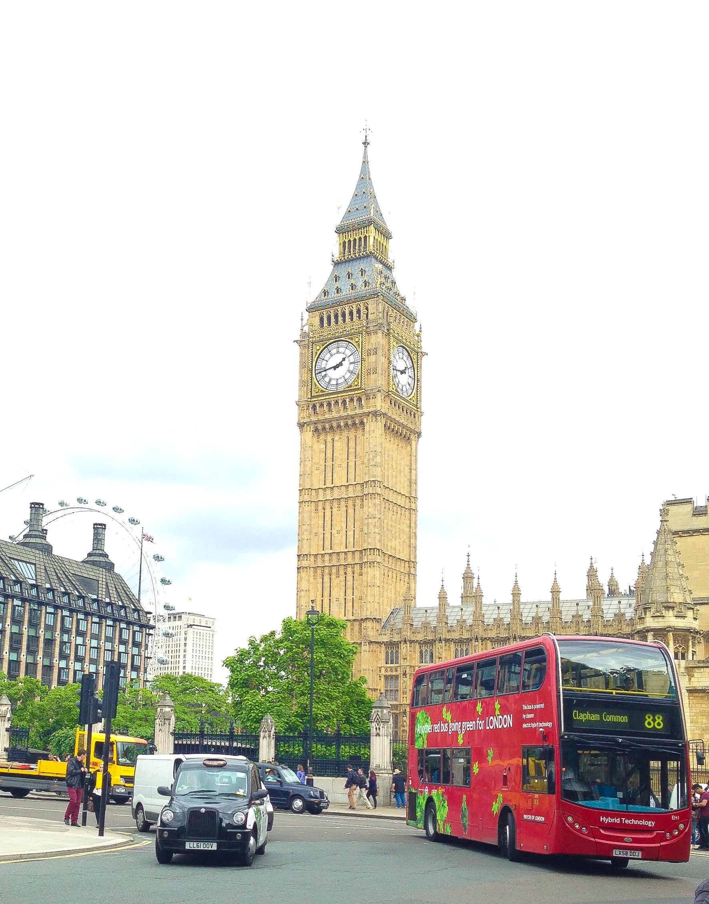
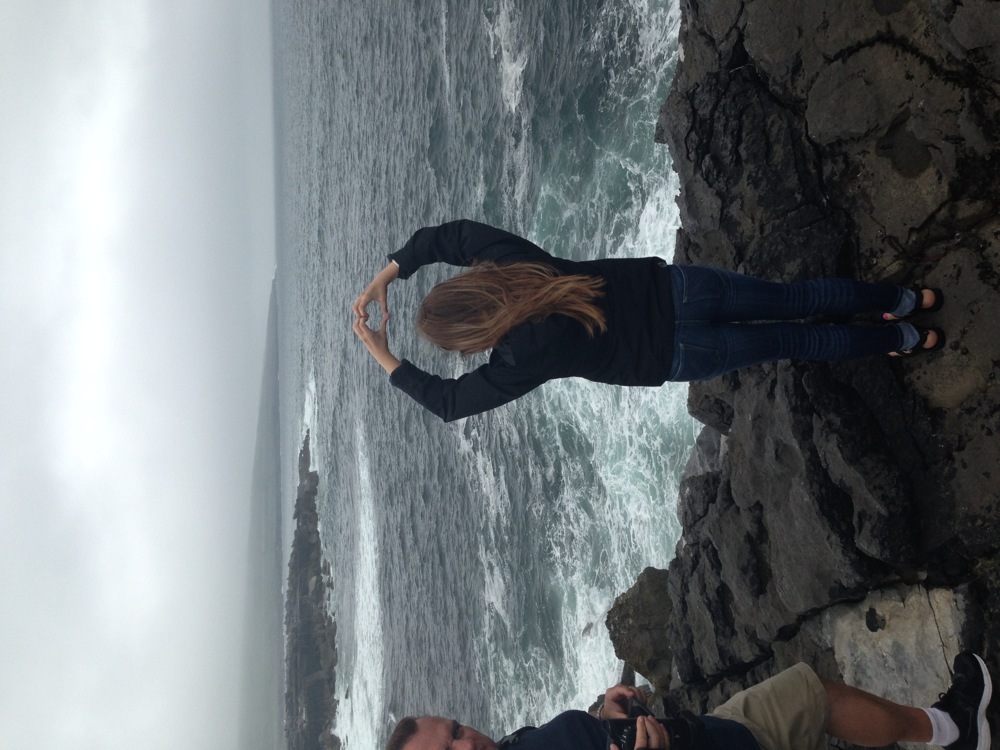

Senior Trip 2014
Growing up my dad would always make a jokes about driving around in circles around Big Ben, I would laugh and imagine myself walking the streets of London. Nothing could prepare me for how amazing London actually was.
Every year my family goes on a vacation and since I graduated high school in 2014 they allowed me to pick where I wanted to go that summer, obvioulsy I chose London and Ireland.
London is Calling
Everything in the city looks like it came out of character book, all the doors are painted a primary color and there are horses pulling carriages of tourists around. I especially loved the bright red phone booths because often when I thought of London I thought of those.
Oh, I love London Society! It is entirely composed now of beautiful idiots and brilliant lunatics. Just what Society should be.
Senior Trip 2014
I was shocked at how green Ireland was. Everywhere you looked there was lush green grass and animals roaming around. I couldn't stop taking pictures it was so breathtaking.
Drink up!
The food in Ireland was AMAZING!! On most days I enjoyed a warm pot pie with a side of gravy and a large Guiness beer.
Your feet will take you where your heart is - Irish Proverb.